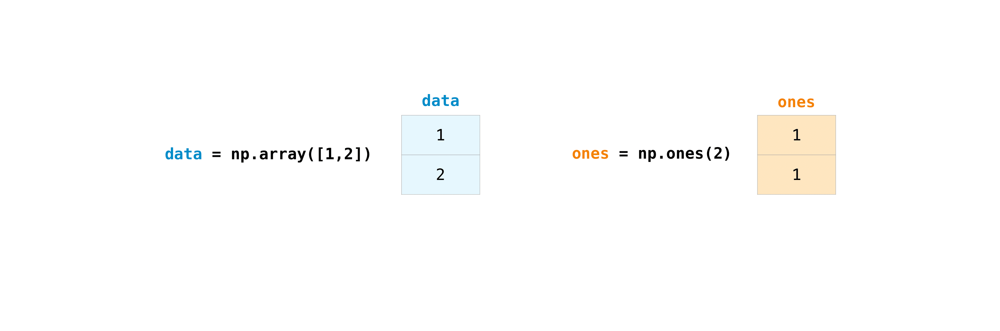

Python: part 3#
Python objects#
We discussed objects back in Objects and classes which are containers for both data and functions to manipulate that data.
Python has support for objects and almost everything in Python is actually an object. To
create your own object you must first create a Class.
class MyClass:
variable = 5
obj = MyClass()
print(obj.variable)
This is not a particularly useful object! All objects in python come with a special
function which is called when you make a new object: __init__(). This function
allows you to set up anything when a new object is made from you Class.
Let’s create the dog class we thought about previously:
class Dog:
def __init__(self, name, age, colour):
self.name = ""
self.age = 0
self.colour = ""
self.state = "clean"
def bark(self):
print("Woof!")
def walkies(self):
self.state = "muddy"
def beCleaned(self):
if (self.state == "clean"):
print(name + " is already clean")
elif (self.state == "muddy"):
print(name + " is now clean")
self.state = "clean"
wilf = Dog("Wilf",5,"Brown")
wilf.bark()
wilf.walkies()
wilf.state
There are a few things here that are worth pointing out. First is the use of self. This is a variable
that is the current object; it has to be the first variable in any function within the class. This allows
the wilf.bark() to work as wilf is passed as the self variable.
One of the key things about classes is that they can inherit other classes. We can therefore build complex stacks of classes using base classes. Let’s create a class for a Guide Dog:
class GuideDog(Dog)
pass
This create a new class from the Dog class previously. It doesn’t add anything as yet, but we have
all of the variables and functions from the Dog class. We can add to or override any of these.
class GuideDog(Dog):
def __init__(self, name, age, colour):
super().__init__(name, age, colour)
self.completed_training = False
def bark(self):
print("Guide dogs don't bark")
def complete_trianing(self):
self.completed_traiing = True
So here we’ve added a new function complete_trianing and overridden the bark function.
buddy=GuideDog("Buddy","3","tan")
buddy.bark()
There are a lot other features of objects in Python, but the main reason for learning about them here is that
most other modules/libraries in Python create objects of some kind. You therefore need to be familiar with the
idea of a varable, e.g. buddy being able to have a function to call using the . notation. When you see
this; you are dealing with an object.
Python: Datetimes#
Dates and time are a common aspect of environmental data. We often need to crop date/times to a specific range and compare or take samples from our data every N minutes, for example. Python comes with a datetime module that helps us deal with these issues. It provides a variety of functions to work out durations, samples and deal with leap years and timezones.
import datetime
now = dateime.datetime.now()
print(now)
This prints the current date and time based on your computers clock:
2024-02-15 09:07:34.636548
However, this has hidden a few things. Instead of placing the now() output
into a variable, print it directly using the console Python
In [1]: import datetime
In [2]: datetime.datetime.now()
Out[2]: datetime.datetime(2024, 2, 15, 9, 7, 26, 165519)
What now() gives us is a datetime object, which contains the year, month, day,
hour, minutes, seconds, and part-seconds. We can access these directly if we need to.
The print function actually creates a prettified string for the user.
The datetime class allows us to create an arbitrary date, time or datetime, rather than relying
on now():
import datetime
# year, month, date
d = datetime.date(2022, 12, 25)
print(d)
# hours, minutes, second
t = datetime.time(11, 34, 56)
print(t)
# or more explicitly:
t = datetime.time(hour=11, minute=34, second=56)
dt = datetime.datetime(2022,12,25,11,34,56)
print(dt)
# note the datetime.datetime as combine is a function on the datetime class
# not the the datetime module
dt2 = datetime.datetime.combine(d, t)
Representing dates and times as these object then allows calculations to be carried out, for example, creating a duration:
import datetime
date1 = datetime.date(2024, 2, 28)
date2 = datetime.date(2023, 2, 28)
print(date1 - date2)
diff = date1-date2
print(diff.total_second())
# what about leap years?
date1 = datetime.date(2024, 2, 29)
date2 = datetime.date(2023, 2, 29)
print(date1 - date2)
The datetime module knows about leap years, etc so can account for those in durations.
This all assumes that the datetime can be constructed from user input easily. Often we need to parse a string to create a datetime object. For example out data might be a CSV with dates listed as:
1984-1-1-0, 480
1984-1-1-1, 510
1984-1-1-2, 580
Here the date is represented by the year, month, day and then hour seperated by a hyphen.
There is no minute or second data.
We can use datetime’s strptime() method to parse these strings:
import datetime
date_string = "1984-1-1-0"
date_object = datetime.datetime.strptime(date_string, "%Y-%m-%d-%H")
print(date_object)
There is also a function to print a datetime object into a specific format:
import datetime
now = datetime.now()
t = now.strftime("%H:%M:%S")
print("Time:", t)
You can see the various formatting options here.
The final bit of the datetime we need to know about are timezones. The UK has two timezones, GMT and BST
which occur in the winter and summer respecitvely. There is a Universal Time zone (UTC) which is
effectively GMT (but doesn’t shift in the UK summer!). The datetime object can handle
timezones and can convert times for you (and takes care of durations over different timezones!).
However, we need another python module pytz to handle the actual timezones.
# note I've only import the datetime object, not the whole datetime module
from datetime import datetime
import pytz
local = datetime.now()
print("Local:", local.strftime("%m/%d/%Y, %H:%M:%S"))
tz_NY = pytz.timezone('America/New_York')
datetime_NY = datetime.now(tz_NY)
print("NY:", datetime_NY.strftime("%m/%d/%Y, %H:%M:%S"))
tz_London = pytz.timezone('Europe/London')
datetime_London = datetime.now(tz_London)
print("London:", datetime_London.strftime("%m/%d/%Y, %H:%M:%S"))
Python: Pandas module#
Python: Numpy#
NumPy (Numerical Python) is an open source Python library that is
widely used in science and engineering. The NumPy library contains
multidimensional array data structures, such as the homogeneous, N-dimensional
ndarray, and a large library of functions that operate efficiently on these
data structures.
Python lists are general-purpose containers. They can be “heterogeneous”, meaning that they can contain elements of a variety of datatypes.
However, scientific data is often numerical and hence homogeneous. NumPy is designed to work on such data, rather than be more general.
Most NumPy arrays have some restrictions. For instance:
All elements of the array must be of the same type of data.
Once created, the total size of the the array can’t change.
The shape must be “rectangular”, not “jagged”; e.g., each row of a two-dimensional array must have the same number of columns.
When these conditions are met, NumPy exploits these characteristics to make the array faster, more memory efficient, and more convenient to use than less restrictive data structures.
For the remainder of this document, we will use the word “array” to refer to
an instance of ndarray.
How to import NumPy#
Numpy is generally imported into Python code like this:
import numpy as np
This widespread convention allows access to NumPy features with a short,
recognizable prefix (np.) while distinguishing NumPy features from others
that have the same name (e.g. max())
NumPy array fundamentals#
One way to initialize an array is using a Python sequence, such as a list. For example:
>>> a = np.array([1, 2, 3, 4, 5, 6])
>>> a
array([1, 2, 3, 4, 5, 6])
Elements of an array can be accessed in various ways. We can access an individual element of this array as we would access an element in the original list: using the integer index of the element within square brackets.
>>> a[0]
1
Like the original list, the array is mutable.
>>> a[0] = 10
>>> a
array([10, 2, 3, 4, 5, 6])
Also like the original list, Python slice notation can be used for indexing.
>>> a[:3]
array([10, 2, 3])
One major difference is that slice indexing of a list copies the elements into a new list, but slicing a NumPy array returns a view: an object that refers to the data in the original array. The original array can be mutated using the view.
>>> b = a[3:]
>>> b
array([4, 5, 6])
>>> b[0] = 40
>>> a
array([ 10, 2, 3, 40, 5, 6])
>>> c = [1,2,3,4,5,6]
>>> d = c[3:]
>>> d[0] = 50
>>> c
>>> d
Two- and higher-dimensional arrays can be initialized from nested Python sequences:
.. code-block:: python
>>> a = np.array([[1, 2, 3, 4], [5, 6, 7, 8], [9, 10, 11, 12]])
>>> a
array([[ 1, 2, 3, 4],
[ 5, 6, 7, 8],
[ 9, 10, 11, 12]])
In NumPy, a dimension of an array is sometimes referred to as an “axis”. This
terminology may be useful to disambiguate between the dimensionality of an
array and the dimensionality of the data represented by the array. For
instance, the array a could represent three points, each lying within a
four-dimensional space, but a has only two “axes”.
Another difference between an array and a list of lists is that an
element of the array can be accessed by specifying the index along each
axis within a single set of square brackets, separated by commas.
For instance, the element 8 is in row 1 and column 3:
>>> a[1, 3]
8
If we used Python lists we would use a[1][3]
Note
It is familiar practice in maths to refer to elements of a matrix by the row index first and the column index second. This happens to be true for two-dimensional arrays, but a better mental model is to think of the column index as coming last and the row index as second to last. This generalizes to arrays with any number of dimensions.
Note
In maths you might hear of a 0-D (zero-dimensional) array referred to as a “scalar”, a 1-D (one-dimensional) array as a “vector”, a 2-D (two-dimensional) array as a “matrix”, or an N-D (N-dimensional, where “N” is typically an integer greater than 2) array as a “tensor”. For clarity, it is best to avoid the mathematical terms when referring to an array because the mathematical objects with these names behave differently than arrays (e.g. “matrix” multiplication is fundamentally different from “array” multiplication), and there are other objects in the scientific Python ecosystem that have these names (e.g. the fundamental data structure of PyTorch is the “tensor”). However, you will find these terms in codes that are mathematical in nature and use NumPy!
Array attributes#
The number of dimensions of an array is contained in the ndim attribute.
>>> a.ndim
2
The shape of an array is a tuple of non-negative integers that specify the number of elements along each dimension.
>>> a.shape
(3, 4)
>>> len(a.shape) == a.ndim
True
The fixed, total number of elements in array is contained in the size
attribute.
>>> a.size
12
>>> import math
>>> a.size == math.prod(a.shape)
True
Arrays are typically “homogeneous”, meaning that they contain elements of
only one “data type”. The data type is recorded in the dtype attribute.
>>> a.dtype
dtype('int64') # "int" for integer, "64" for 64-bit
How to create a basic array#
Besides creating an array from a sequence of elements, you can easily create an
array filled with 0’s:
.. code-block:: python
>>> np.zeros(2)
array([0., 0.])
Or an array filled with 1’s:
.. code-block:: python
>>> np.ones(2)
array([1., 1.])
Or even an empty array! The function empty creates an array whose initial
content is random and depends on the state of the memory. The reason to use
empty over zeros (or something similar) is speed - just make sure to
fill every element afterwards!
.. code-block:: python
>>> # Create an empty array with 2 elements
>>> np.empty(2)
array([3.14, 42. ]) # may vary
You can create an array with a range of elements:
.. code-block:: python
>>> np.arange(4)
array([0, 1, 2, 3])
And even an array that contains a range of evenly spaced intervals. To do this, you will specify the first number, last number, and the step size.
>>> np.arange(2, 9, 2)
array([2, 4, 6, 8])
You can also use np.linspace() to create an array with values that are
spaced linearly in a specified interval:
>>> np.linspace(0, 10, num=5)
array([ 0. , 2.5, 5. , 7.5, 10. ])
Specifying your data type
While the default data type is floating point (np.float64), you can explicitly
specify which data type you want using the dtype keyword.
>>> x = np.ones(2, dtype=np.int64)
>>> x
array([1, 1])
Adding, removing, and sorting elements#
Sorting an element is simple with np.sort(). You can specify the axis, kind,
and order when you call the function.
If you start with this array:
>>> arr = np.array([2, 1, 5, 3, 7, 4, 6, 8])
You can quickly sort the numbers in ascending order with:
>>> np.sort(arr)
array([1, 2, 3, 4, 5, 6, 7, 8])
In addition to sort, which returns a sorted copy of an array, you can use:
argsort, which is an indirect sort along a specified axis,
lexsort, which is an indirect stable sort on multiple keys,
searchsorted, which will find elements in a sorted array, and
partition, which is a partial sort.
To read more about sorting an array, see: sort.
If you start with these arrays:
>>> a = np.array([1, 2, 3, 4])
>>> b = np.array([5, 6, 7, 8])
You can concatenate them with np.concatenate().
>>> np.concatenate((a, b))
array([1, 2, 3, 4, 5, 6, 7, 8])
Or, if you start with these arrays:
>>> x = np.array([[1, 2], [3, 4]])
>>> y = np.array([[5, 6]])
You can concatenate them with:
>>> np.concatenate((x, y), axis=0)
array([[1, 2],
[3, 4],
[5, 6]])
In order to remove elements from an array, it’s simple to use indexing to select the elements that you want to keep.
To read more about concatenate, see: concatenate.
How do you know the shape and size of an array?#
ndarray.ndim will tell you the number of axes, or dimensions, of the array.
ndarray.size will tell you the total number of elements of the array. This
is the product of the elements of the array’s shape.
ndarray.shape will display a tuple of integers that indicate the number of
elements stored along each dimension of the array. If, for example, you have a
2-D array with 2 rows and 3 columns, the shape of your array is (2, 3).
For example, if you create this array:
>>> array_example = np.array([[[0, 1, 2, 3],
... [4, 5, 6, 7]],
...
... [[0, 1, 2, 3],
... [4, 5, 6, 7]],
...
... [[0 ,1 ,2, 3],
... [4, 5, 6, 7]]])
To find the number of dimensions of the array, run:
>>> array_example.ndim
3
To find the total number of elements in the array, run:
>>> array_example.size
24
And to find the shape of your array, run:
>>> array_example.shape
(3, 2, 4)
Can you reshape an array?#
Yes!
Using arr.reshape() will give a new shape to an array without changing the
data. Just remember that when you use the reshape method, the array you want to
produce needs to have the same number of elements as the original array. If you
start with an array with 12 elements, you’ll need to make sure that your new
array also has a total of 12 elements.
If you start with this array:
>>> a = np.arange(6)
>>> print(a)
[0 1 2 3 4 5]
You can use reshape() to reshape your array. For example, you can reshape
this array to an array with three rows and two columns:
>>> b = a.reshape(3, 2)
>>> print(b)
[[0 1]
[2 3]
[4 5]]
With np.reshape, you can specify a few optional parameters:
>>> np.reshape(a, newshape=(1, 6), order='C')
array([[0, 1, 2, 3, 4, 5]])
a is the array to be reshaped.
newshape is the new shape you want. You can specify an integer or a tuple of
integers. If you specify an integer, the result will be an array of that length.
The shape should be compatible with the original shape.
order: C means to read/write the elements using C-like index order,
F means to read/write the elements using Fortran-like index order, A
means to read/write the elements in Fortran-like index order if a is Fortran
contiguous in memory, C-like order otherwise. (This is an optional parameter and
doesn’t need to be specified.)
C and Fortran orders have to do with how indices correspond to the order the array is stored in memory. In Fortran, when moving through the elements of a two-dimensional array as it is stored in memory, the first index is the most rapidly varying index. As the first index moves to the next row as it changes, the matrix is stored one column at a time. This is why Fortran is thought of as a Column-major language. In C on the other hand, the last index changes the most rapidly. The matrix is stored by rows, making it a Row-major language. What you do for C or Fortran depends on whether it’s more important to preserve the indexing convention or not reorder the data.
How to convert a 1D array into a 2D array (how to add a new axis to an array)#
You can use np.newaxis and np.expand_dims to increase the dimensions of
your existing array.
Using np.newaxis will increase the dimensions of your array by one dimension
when used once. This means that a 1D array will become a 2D array, a
2D array will become a 3D array, and so on.
For example, if you start with this array:
>>> a = np.array([1, 2, 3, 4, 5, 6])
>>> a.shape
(6,)
You can use np.newaxis to add a new axis:
>>> a2 = a[np.newaxis, :]
>>> a2.shape
(1, 6)
You can explicitly convert a 1D array to either a row vector or a column
vector using np.newaxis. For example, you can convert a 1D array to a row
vector by inserting an axis along the first dimension:
>>> row_vector = a[np.newaxis, :]
>>> row_vector.shape
(1, 6)
Or, for a column vector, you can insert an axis along the second dimension:
>>> col_vector = a[:, np.newaxis]
>>> col_vector.shape
(6, 1)
You can also expand an array by inserting a new axis at a specified position
with np.expand_dims.
For example, if you start with this array:
>>> a = np.array([1, 2, 3, 4, 5, 6])
>>> a.shape
(6,)
You can use np.expand_dims to add an axis at index position 1 with:
>>> b = np.expand_dims(a, axis=1)
>>> b.shape
(6, 1)
You can add an axis at index position 0 with:
>>> c = np.expand_dims(a, axis=0)
>>> c.shape
(1, 6)
Indexing and slicing#
You can index and slice NumPy arrays in the same ways you can slice Python lists.
>>> data = np.array([1, 2, 3])
>>> data[1]
2
>>> data[0:2]
array([1, 2])
>>> data[1:]
array([2, 3])
>>> data[-2:]
array([2, 3])
You can visualize it this way:

You may want to take a section of your array or specific array elements to use in further analysis or additional operations. To do that, you’ll need to subset, slice, and/or index your arrays.
If you want to select values from your array that fulfill certain conditions, it’s straightforward with NumPy.
For example, if you start with this array
>>> a = np.array([[1 , 2, 3, 4], [5, 6, 7, 8], [9, 10, 11, 12]])
You can easily print all of the values in the array that are less than 5.
>>> print(a[a < 5])
[1 2 3 4]
You can also select, for example, numbers that are equal to or greater than 5, and use that condition to index an array.
>>> five_up = (a >= 5)
>>> print(a[five_up])
[ 5 6 7 8 9 10 11 12]
You can select elements that are divisible by 2:
>>> divisible_by_2 = a[a%2==0]
>>> print(divisible_by_2)
[ 2 4 6 8 10 12]
Or you can select elements that satisfy two conditions using the & and |
operators:
>>> c = a[(a > 2) & (a < 11)]
>>> print(c)
[ 3 4 5 6 7 8 9 10]
You can also make use of the logical operators & and | in order to return boolean values that specify whether or not the values in an array fulfill a certain condition. This can be useful with arrays that contain names or other categorical values.
>>> five_up = (a > 5) | (a == 5)
>>> print(five_up)
[[False False False False]
[ True True True True]
[ True True True True]]
You can also use np.nonzero() to select elements or indices from an array.
Starting with this array:
>>> a = np.array([[1, 2, 3, 4], [5, 6, 7, 8], [9, 10, 11, 12]])
You can use np.nonzero() to print the indices of elements that are, for
example, less than 5:
>>> b = np.nonzero(a < 5)
>>> print(b)
(array([0, 0, 0, 0]), array([0, 1, 2, 3]))
In this example, a tuple of arrays was returned: one for each dimension. The first array represents the row indices where these values are found, and the second array represents the column indices where the values are found.
If you want to generate a list of coordinates where the elements exist, you can zip the arrays, iterate over the list of coordinates, and print them. For example:
>>> list_of_coordinates= list(zip(b[0], b[1]))
>>> for coord in list_of_coordinates:
... print(coord)
(np.int64(0), np.int64(0))
(np.int64(0), np.int64(1))
(np.int64(0), np.int64(2))
(np.int64(0), np.int64(3))
You can also use np.nonzero() to print the elements in an array that are less
than 5 with:
>>> print(a[b])
[1 2 3 4]
If the element you’re looking for doesn’t exist in the array, then the returned array of indices will be empty. For example:
>>> not_there = np.nonzero(a == 42)
>>> print(not_there)
(array([], dtype=int64), array([], dtype=int64))
How to create an array from existing data#
You can easily create a new array from a section of an existing array.
Let’s say you have this array:
>>> a = np.array([1, 2, 3, 4, 5, 6, 7, 8, 9, 10])
You can create a new array from a section of your array any time by specifying where you want to slice your array.
>>> arr1 = a[3:8]
>>> arr1
array([4, 5, 6, 7, 8])
Here, you grabbed a section of your array from index position 3 through index position 8.
You can also stack two existing arrays, both vertically and horizontally. Let’s
say you have two arrays, a1 and a2
>>> a1 = np.array([[1, 1],
... [2, 2]])
>>> a2 = np.array([[3, 3],
... [4, 4]])
You can stack them vertically with vstack
>>> np.vstack((a1, a2))
array([[1, 1],
[2, 2],
[3, 3],
[4, 4]])
Or stack them horizontally with hstack
>>> np.hstack((a1, a2))
array([[1, 1, 3, 3],
[2, 2, 4, 4]])
You can split an array into several smaller arrays using hsplit. You can
specify either the number of equally shaped arrays to return or the columns
after which the division should occur.
Let’s say you have this array
>>> x = np.arange(1, 25).reshape(2, 12)
>>> x
array([[ 1, 2, 3, 4, 5, 6, 7, 8, 9, 10, 11, 12],
[13, 14, 15, 16, 17, 18, 19, 20, 21, 22, 23, 24]])
If you wanted to split this array into three equally shaped arrays, you would run
>>> np.hsplit(x, 3)
[array([[ 1, 2, 3, 4],
[13, 14, 15, 16]]), array([[ 5, 6, 7, 8],
[17, 18, 19, 20]]), array([[ 9, 10, 11, 12],
[21, 22, 23, 24]])]
If you wanted to split your array after the third and fourth column, you’d run
>>> np.hsplit(x, (3, 4))
[array([[ 1, 2, 3],
[13, 14, 15]]), array([[ 4],
[16]]), array([[ 5, 6, 7, 8, 9, 10, 11, 12],
[17, 18, 19, 20, 21, 22, 23, 24]])]
You can use the view method to create a new array object that looks at the
same data as the original array (a shallow copy).
Views are an important NumPy concept! NumPy functions, as well as operations like indexing and slicing, will return views whenever possible. This saves memory and is faster (no copy of the data has to be made). However it’s important to be aware of this - modifying data in a view also modifies the original array!
Let’s say you create this array
>>> a = np.array([[1, 2, 3, 4], [5, 6, 7, 8], [9, 10, 11, 12]])
Now we create an array b1 by slicing a and modify the first element of
b1. This will modify the corresponding element in a as well!
>>> b1 = a[0, :]
>>> b1
array([1, 2, 3, 4])
>>> b1[0] = 99
>>> b1
array([99, 2, 3, 4])
>>> a
array([[99, 2, 3, 4],
[ 5, 6, 7, 8],
[ 9, 10, 11, 12]])
Using the copy method will make a complete copy of the array and its data (a
deep copy). To use this on your array, you could run:
>>> b2 = a.copy()
Basic array operations#
Once you’ve created your arrays, you can start to work with them. Let’s say, for example, that you’ve created two arrays, one called “data” and one called “ones”
You can add the arrays together with the plus sign.
>>> data = np.array([1, 2])
>>> ones = np.ones(2, dtype=int)
>>> data + ones
array([2, 3])

You can, of course, do more than just addition!
>>> data - ones
array([0, 1])
>>> data * data
array([1, 4])
>>> data / data
array([1., 1.])

Basic operations are simple with NumPy. If you want to find the sum of the
elements in an array, you’d use sum(). This works for 1D arrays, 2D arrays,
and arrays in higher dimensions.
>>> a = np.array([1, 2, 3, 4])
>>> a.sum()
10
To add the rows or the columns in a 2D array, you would specify the axis.
If you start with this array:
>>> b = np.array([[1, 1], [2, 2]])
You can sum over the axis of rows with:
>>> b.sum(axis=0)
array([3, 3])
You can sum over the axis of columns with:
>>> b.sum(axis=1)
array([2, 4])
Transposing and reshaping a matrix#
It’s common to need to transpose your matrices. NumPy arrays have the property
T that allows you to transpose a matrix.

You may also need to switch the dimensions of a matrix. This can happen when,
for example, you have a model that expects a certain input shape that is
different from your dataset. This is where the reshape method can be useful.
You simply need to pass in the new dimensions that you want for the matrix.
>>> data.reshape(2, 3)
array([[1, 2, 3],
[4, 5, 6]])
>>> data.reshape(3, 2)
array([[1, 2],
[3, 4],
[5, 6]])

You can also use .transpose() to reverse or change the axes of an array
according to the values you specify.
If you start with this array:
>>> arr = np.arange(6).reshape((2, 3))
>>> arr
array([[0, 1, 2],
[3, 4, 5]])
You can transpose your array with arr.transpose().
>>> arr.transpose()
array([[0, 3],
[1, 4],
[2, 5]])
You can also use arr.T
>>> arr.T
array([[0, 3],
[1, 4],
[2, 5]])
To learn more about transposing and reshaping arrays, see transpose and reshape.
NumPy’s np.flip() function allows you to flip, or reverse, the contents of
an array along an axis. When using np.flip(), specify the array you would like
to reverse and the axis. If you don’t specify the axis, NumPy will reverse the
contents along all of the axes of your input array.
Reversing a 1D array
If you begin with a 1D array like this one
>>> arr = np.array([1, 2, 3, 4, 5, 6, 7, 8])
You can reverse it with
>>> reversed_arr = np.flip(arr)
If you want to print your reversed array, you can run:
>>> print('Reversed Array: ', reversed_arr)
Reversed Array: [8 7 6 5 4 3 2 1]
Reversing a 2D array
A 2D array works much the same way.
If you start with this array:
>>> arr_2d = np.array([[1, 2, 3, 4], [5, 6, 7, 8], [9, 10, 11, 12]])
You can reverse the content in all of the rows and all of the columns with:
>>> reversed_arr = np.flip(arr_2d)
>>> print(reversed_arr)
[[12 11 10 9]
[ 8 7 6 5]
[ 4 3 2 1]]
You can easily reverse only the rows with:
>>> reversed_arr_rows = np.flip(arr_2d, axis=0)
>>> print(reversed_arr_rows)
[[ 9 10 11 12]
[ 5 6 7 8]
[ 1 2 3 4]]
Or reverse only the columns with:
>>> reversed_arr_columns = np.flip(arr_2d, axis=1)
>>> print(reversed_arr_columns)
[[ 4 3 2 1]
[ 8 7 6 5]
[12 11 10 9]]
You can also reverse the contents of only one column or row. For example, you can reverse the contents of the row at index position 1 (the second row):
>>> arr_2d[1] = np.flip(arr_2d[1])
>>> print(arr_2d)
[[ 1 2 3 4]
[ 8 7 6 5]
[ 9 10 11 12]]
You can also reverse the column at index position 1 (the second column):
>>> arr_2d[:,1] = np.flip(arr_2d[:,1])
>>> print(arr_2d)
[[ 1 10 3 4]
[ 8 7 6 5]
[ 9 2 11 12]]
Image credits: Jay Alammar https://jalammar.github.io/
Material is based on https://numpy.org/doc/stable/license.html#
Python: namespace#
Namespace and scope are the section of code where your variables are valid. A namespace is a collection of currently defined symbolic names; basically a dictionary of variable names pointing to the object in memory. There are several layers of namespaces in Python:
Built-in
Global
Enclosing
Local
These have different lifespans and Python handles the creation and deletion of the namesapces as our code is executed.
The namespaces#
The built-in namespace contains all of Python’s built-in object which are availabel everytime you run any Python. We can look at this:
dir(__builtins__)
Out[1]:
['ArithmeticError',
'AssertionError',
'AttributeError',
'BaseException',
'BlockingIOError',
'BrokenPipeError',
'BufferError',
...
You can see things like error objects, False etc in the list generated, as well as built-in
functions like len().
The global namespace is created at the main level of any python program. As soon as the main body of any
Python code is executed this namespace created. You may have more than one of these as import
statements create a global namespace for themselves. However, when you read global in terms if namespace
think of it as the one associated with your program.
Local and enclosing namespaces are like sub-namespaces when you create a function. The variables (and functions!) created only exist within that function.
Python Scope#
These namespaces mean variables of the same name can exist at the same time. As long as they are in a different namespace they won’t interfere with each other. But how does Python know which one to use. This is the concept of scope.
Python looks for variables in the reverse order of the list above, so we will look for a variable in:
Local
Enclosing
Global
Built-in
If you look for max() function, Python will look in the local, th enclosing, then global
then the built-in namespaces.
x = "global"
def func1():
x = "enclosing"
def func2():
print(x)
func2()
func1()
print(x)
Before you run this, what will be printed? Now let’s add another x:
x = "global"
def func1():
x = "enclosing"
def func2():
x = "local"
print(x)
func2()
print(x)
func1()
print(x)
See if you can work out what will be printed this time. Our final exercise:
def func1():
x = "enclosing"
def func2():
x = "local"
print(x)
func2()
print(x)
func1()
print(x)
What ahppens this time? Did you use a fresh ipython or script?
So how do you modify variables that aren’t in the current scope?
x = 20
def func1():
x = 40
print(x)
func1()
print(x)
The x inside func1 is a local reference. As func1 exits that reference
is deleted. The print(x) then uses the x in the global namespace.
What if x is a list and we try and modify it?
x = [20, 40, 60]
def func1():
x[1] = 41
print(x)
func1()
print(x)
Here, both the global and local give the same answer. We’ve modified the global variable within the function. However, if we create a list of the same variable name, we’ll have similar behaviour to the previous example:
x = [20, 40, 60]
def func1():
x = [20, 41, 60]
print(x)
func1()
print(x)
If we want func1 to actually modify the global variable we have to tell Python explicitly:
x = [20, 40, 60]
def func1():
global x
x = [20, 41, 60]
print(x)
func1()
print(x)
If you create a global variable within a function it will be available to the global namesapce:
def func1():
global x
x = [20, 41, 60]
print(x)
func1()
print(x)
(run in a new ipython or as a script as x has already been created). Constructs such as if, with, etc
do not create scope.